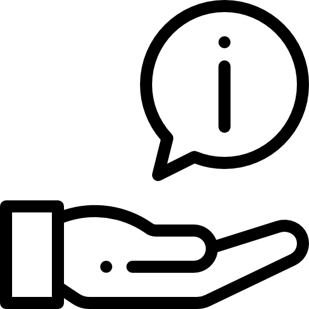

Upon analysis of our research, we realised that travellers who encounter difficulties when packing
generally
face these two main problems:

Not knowing what and how many items to pack

Taking longer than they can / want to pack
Research showed that many users overpack as a result of not knowing how many items to bring
on the trip, and despite that, they still find themselves lacking certain items. Some users also
struggle
with the time taken to pack their luggage, such as those who go on frequent business trips, or those
who tend to pack on the day of their flight. Hence, our application should:
Help users to generate packing lists

Provide readily available sources of information to create these packing
lists
With packing lists providing a clear record of the necessary items, users can save the extra time spent
on
fumbling around, and instead quickly grab the items as listed on the application. With sources of
information
giving users a guide on the necessary items and the quantity to pack, users can reduce the risk of
missing
certain items as well as overpacking.